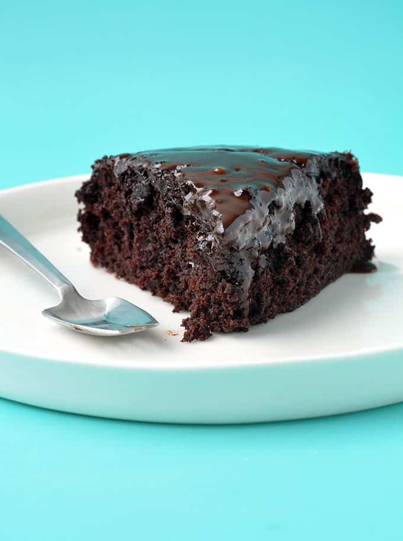

Vegan Fudge Cake

A fluffy crumbly box cake made with a can of soda instead of animal products.
- 1 Chocolate Box mix
- 330ml of Flavored Soda
- Pinch of Baking Soda
Keep in mind that the soda will lend some of its flavor to the cake. Diet soda may
be used instead to lower sugar content.
-
Preheat oven to 355 degrees. Line your cake pan with parchment.
-
Sift cake mix into a bowl. Add in your can of soda, folding
with a spoon or spatula in order to maintain air bubbles.
-
Transfer mix into the pan and bake for 25 minutes or until
skewer comes out clean from center.
-
Let cool before decorating with chosen frosting.